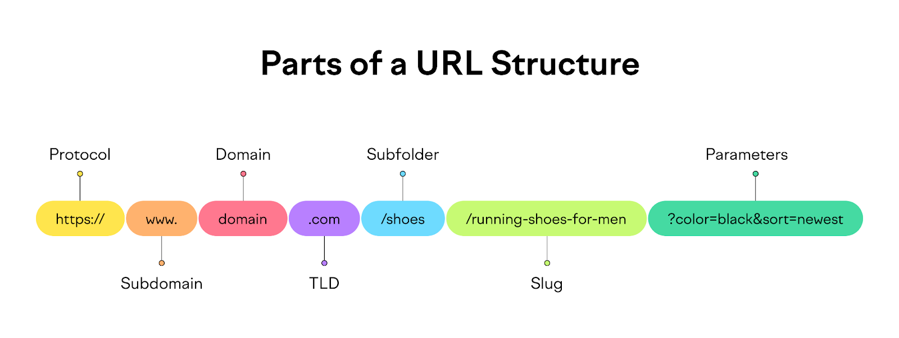

Day3 task
STRUCTURE OF URL
Uniform Resource Locators(URL)
URL is essentially the address of a resource on the internet, such as a web page, image, or file. It's what you type into your browser's address bar to access a website or download a file.Its components include the scheme, authority (subdomain, domain, port), path, query string, and fragment.
A URL specifies:
The protocol (or scheme) to use.
The location of the resource (domain and path).
Additional parameters (query strings) or fragments (specific sections of a page).

\Waterfall Methodology
The Waterfall Methodology is one of the oldest and most traditional approaches to software development and project management.The Waterfall Methodology is a linear project management approach where progress flows in one direction—downward, like a waterfall.It is divided into distinct phases, and each phase must be completed before the next one begins.It is often used in projects where requirements are well-defined and unlikely to change.

Agile Methodology
Agile Methodology is a modern, iterative, and flexible approach to software development and project management. It emphasizes collaboration, customer feedback, and the ability to adapt to changing requirements. Agile is widely used in software development but has also been adopted in other industries due to its effectiveness in managing complex projects.
It promotes continuous iteration of development and testing throughout the lifecycle of the project.
Agile is based on the Agile Manifesto, which outlines four core values and twelve principles.

Software Development Life Cycle (SDLC)
The Software Development Life Cycle (SDLC) is a structured process used by software development teams to design, develop, test, and deploy high-quality software. It provides a framework for planning, controlling, and monitoring the progress of a software project. The SDLC ensures that the final product meets customer requirements and is delivered on time and within budget.
Each phase has specific goals, deliverables, and activities.The SDLC helps teams manage complexity, reduce risks, and ensure quality.
.webp)